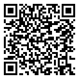

🔵 5ème · Période 5
Séquence 8 : IA et objets connectés
📘 Fiche de structuration des connaissances
🔗 Lien direct vers cette page

58S
Scanne le QR code, ou saisis ce code sur la page d'accès direct du site.
https://lyceefrancaisdetananarive.github.io/technologie/go.html?c=58S
| Niveau | 5ème | Thème | Thème 3 : Conception et création de prototypes |
| Séquence | 9 : IA et IoT | Compétences | Identifier une IA Comprendre l'IoT |
📌 Qu'est-ce que l'intelligence artificielle ?
| Notion | Explication | Exemple |
|---|---|---|
| Intelligence artificielle (IA) | Programme capable d'imiter certaines capacités humaines (reconnaître, décider, prédire) | Assistant vocal, reconnaissance de visage |
| Apprentissage automatique | L'IA s'améliore en analysant un grand nombre de données (entraînement) | Filtre anti-spam qui apprend à reconnaître les indésirables |
| Données d'entraînement | Les exemples utilisés pour entraîner l'IA | Des milliers de photos de chats pour apprendre à les reconnaître |
À retenir
L'intelligence artificielle n'est pas « intelligente » comme un humain : c'est un programme qui apprend à partir de données pour réaliser une tâche précise.
📌 Les objets connectés (IoT)
Un objet connecté est un objet physique relié à Internet qui peut collecter et échanger des données.
| Composant | Rôle | Exemple |
|---|---|---|
| Capteur | Mesure une grandeur physique | Capteur de température, accéléromètre |
| Microcontrôleur | Traite les données du capteur | micro:bit, Arduino, ESP32 |
| Connexion réseau | Envoie les données à Internet | Wi-Fi, Bluetooth, 4G |
| Application / Cloud | Affiche et analyse les données à distance | Application smartphone, tableau de bord web |
À retenir
Un objet connecté suit le cycle : Capter → Traiter → Communiquer → Agir. L'IoT (Internet of Things) désigne l'ensemble des objets connectés.
📌 Données personnelles et RGPD
| Concept | Explication |
|---|---|
| Données personnelles | Toute information permettant d'identifier une personne (nom, photo, localisation, habitudes) |
| RGPD | Règlement Général sur la Protection des Données : loi européenne protégeant les données personnelles |
| Consentement | L'utilisateur doit accepter la collecte de ses données |
| Droit à l'effacement | On peut demander la suppression de ses données |
À retenir
Les objets connectés collectent des données personnelles. Le RGPD garantit à chacun le droit de savoir quelles données sont collectées et de demander leur suppression.
📌 Avantages et risques
| Avantages | Risques | |
|---|---|---|
| IA | Aide au diagnostic médical, gain de temps, automatisation | Biais dans les données, remplacement d'emplois, surveillance |
| IoT | Confort, économies d'énergie, sécurité (alarmes) | Piratage, collecte abusive de données, dépendance |
📚 Vocabulaire essentiel
Mots clés de la séquence
- Intelligence artificielle (IA) : programme imitant des capacités humaines grâce à l'apprentissage sur des données
- Apprentissage automatique : processus par lequel l'IA s'améliore à partir d'exemples
- Objet connecté (IoT) : objet physique relié à Internet pour collecter et échanger des données
- Capteur : composant qui mesure une grandeur physique
- RGPD : loi européenne protégeant les données personnelles des citoyens
- Données personnelles : informations permettant d'identifier une personne
📎 Référence : Programme de Technologie, BO n°9 du 29 février 2024 · Thème 3